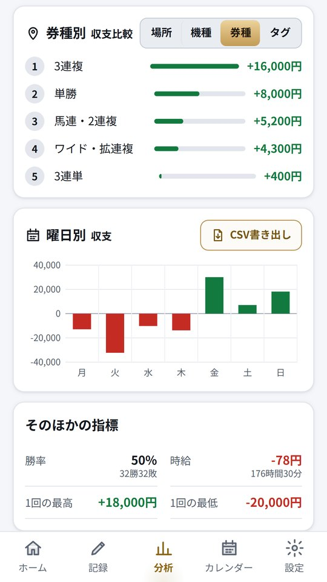

カチマケ › 競馬の収支のつけ方
競馬の収支のつけ方(年間・券種ごとの集計)
2026年10月26日
馬券の収支は、週末が終わった時点ではなんとなく覚えていても、ひと月たつと思い出せなくなります。大きな払戻があった日のことはよく覚えているのに、こまかく外れた日の購入額は記憶から抜けやすいからです。年間の収支を正しく出したいなら、その週のうちに1行ずつ残しておくしかありません。
このページでは、あとから年間の収支と券種ごとの集計が出せる残し方をまとめます。予想や買い方の話は出てきません。記録のつけ方だけの話です。
1行に入れるもの
1行は「1レースの1券種」にすると、あとで券種ごとに集計できます。入れるのは次の6つです。
日付 / 競馬場 / レース(例: 11R) / 券種 / 購入額 / 払戻
同じレースで3連複と単勝を買ったなら、2行に分けます。1行にまとめてしまうと、どちらの券種で払戻があったのかが残らず、券種ごとの集計ができなくなります。
外れたレースも必ず入れます。払戻 0円の行がきちんと並んでいることが、収支表のいちばん大事なところです。当たったレースだけが残っている表は、見返すたびに実際より良い数字を見せてしまいます。
返還金とWIN5の入れ方
出走取消や競走除外で馬券の代金が戻ってきたときは、その分を購入額から引いておきます。払戻に入れてしまうと、払戻が実際より多く見え、回収率も高く出ます。
例: 3連複を 3,000円買い、うち 600円分が取消で返還 → 購入額は 2,400円で記録
WIN5 は5レースにまたがる馬券なので、レース欄には「WIN5」と書き、券種も WIN5 として別にしておくと集計で混ざりません。JRA の発表では、WIN5 は払い戻しに回る割合がほかの券種より低く決められています。券種ごとの払戻率は回収率の出し方にまとめました。
ネット投票を使っているなら、購入の履歴を週末ごとに見て写しておくのが確実です。履歴の画面がいつまで見られるかはサービスによって違うので、まとめて写そうとすると古い分が見られなくなっていることがあります。
年間の収支を出す
年間の収支は、その年の払戻の合計から購入額の合計を引いた数字です。月ごとの収支を足しても同じになりますが、途中で書き方を変えた月があるとずれるので、1行ずつの記録から合計するほうが確実です。
年間で見ると、1回の大きな払戻がどれくらい年の数字を動かしているかも分かります。その1回を除いた残りの収支も一度出してみると、ふだんの買い方の結果がよりはっきり見えます。
券種ごとに集計する
券種ごとに、購入額の合計、払戻の合計、収支を並べます。どの券種にいちばん多く使っているかは、収支の大きさより先に見ておきたいところです。使った額が多い券種ほど、年の数字への影響も大きくなります。
回収率を券種ごとに出すときも、1レースずつの率を平均せず、券種ごとの払戻の合計を購入額の合計で割ります。理由は回収率の出し方に書いています。
スプレッドシートで作るとき
A列から日付・競馬場・レース・券種・購入額・払戻の順に並べたとして、よく使う式を置いておきます。範囲は 2行目から1000行目にしています。
その年の購入額: =SUMIFS(E2:E1000, A2:A1000, ">="&DATE(2026,1,1), A2:A1000, "<"&DATE(2027,1,1))その年の払戻: =SUMIFS(F2:F1000, A2:A1000, ">="&DATE(2026,1,1), A2:A1000, "<"&DATE(2027,1,1))3連複の収支: =SUMIFS(F2:F1000, D2:D1000, "3連複") - SUMIFS(E2:E1000, D2:D1000, "3連複")3連複の回収率(%): =SUMIFS(F2:F1000, D2:D1000, "3連複") / SUMIFS(E2:E1000, D2:D1000, "3連複") * 100
券種の名前は、毎回同じ書き方にしてください。「3連複」と「三連複」が混ざると、式では別の券種として数えられます。入力のときに選ぶだけにしておくと、このずれは起きません。
収支は、使ったお金の行き先を確かめるための数字です。年の始めに年間の上限を決めておき、月ごとに今どこにいるかを確かめるようにすると、記録がそのまま使いすぎに気づく道具になります。
カチマケは、競馬・競輪・ボート・オートの記録で券種を選んで残せる収支アプリです。購入額と払戻をボタンで入れると、その場で収支が出ます。ホームには今月と今年の収支が並び、分析の画面では今月・3か月・今年・全期間を切り替えて、券種ごと・場所ごとの収支を順に並べて見られます(券種ごとの比較と長い期間の分析は完全版の機能です。回収率は選んだ期間全体の数字で出ます)。記録はスマホの中だけに保存します。

Android 版です。18歳以上の方向けの収支記録アプリで、予想や買い方の情報は載っていません。賭け事そのものも提供しません。公営競技の投票は20歳未満の方は法律で禁止されています。
https://play.google.com/store/apps/details?id=jp.kachimake.app